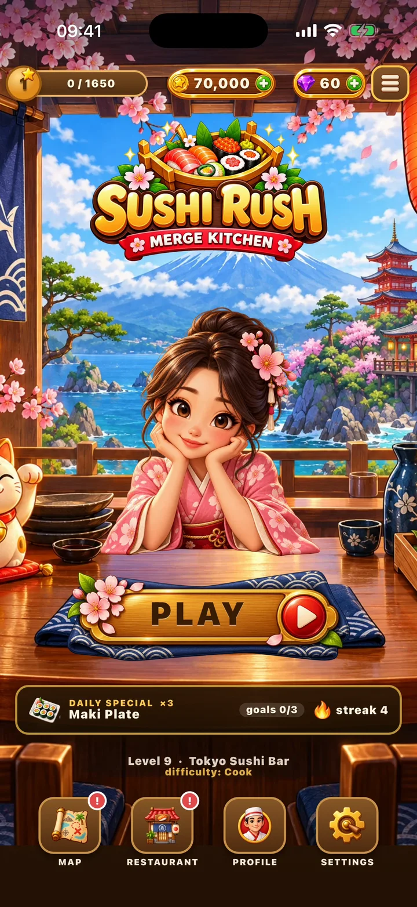

Sushi Rush: Merge Kitchen
Merge dishes, keep hungry customers happy and open sushi bars across Japan.
Łącz dania, karm głodnych klientów i otwieraj kolejne bary sushi w Japonii.
Drag matching dishes together to make better ones, serve them before customers lose patience, and spend what you earn on new restaurants from Tokyo to Osaka. 76 levels in three worlds, combos and boosters. No ads, no energy timers. Your progress is saved in this browser.
Przeciągasz dwa takie same dania, żeby zrobić lepsze, podajesz je, zanim klientom skończy się cierpliwość, a za zarobione monety otwierasz kolejne lokale od Tokio po Osakę. 76 poziomów w trzech światach, combo i boostery. Bez reklam, bez liczników energii. Postęp zapisuje się w tej przeglądarce.
Browser now · App Store and Google Play soonTeraz w przeglądarce · wkrótce w App Store i Google Play